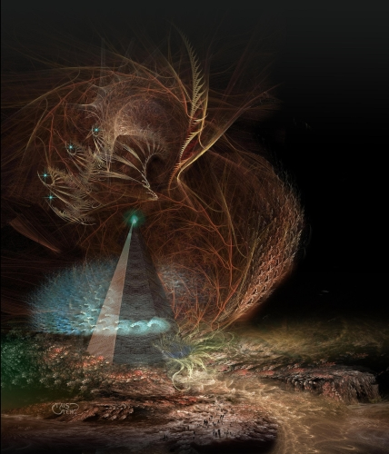

And the Sky is Filled with Eyes (Part 2)
by
Tais Teng
To And the Sky is Filled with Eyes (Part 1)
Gossil, age 17
1.
"Visit me in the Watch-tower when you finally get to the top," Aunt Fayima said on his birthday. Gossil would start his Ascent the very next day, lingering for a day at every level of the Ship. It was the age-old rite of passage, the start of your adulthood. Every new day you would meet a dozen strangers, walk through a new city with weird and wonderful customs.
"It will take some time," Gossil said. There are more than a thousand levels to climb."
"You are going alone? Or is it with Yaleena?"
"She is no longer my girl-friend." He spread his hands. "We still like each other. It just didn't work out. Not in that forever and ever and true love way."
"There will be other girls. I bet all the girls consider you a regular anansi, a sleek wolf!"
Yes, he thought. Thanks to Yaleena. Walking hand in hand with her has giving me mana, prestige. When the most beautiful girl of the class chooses you instead of an older boy, every other girl wants you.
He now understood why his father had never objected to Aunt Fayima visiting them so often. She almost lived in the house and her not a real aunt at all. Fayima was the Niketria of the Ship, the war leader, and that was close as you could get to royalty. It didn't matter that she spent so much time with his wife: she never snubbed him. Gossil had seen perfect strangers accost his father on the market, saying: "Is it true that the Niketria herself is visiting you?"
Some of those, no, most of them, had been female. If it had been any other person than the Niketria , they would have pitied him, seen him as a cuckold, a double cuckold, with his wife betraying him with a woman. But now he was a man married to the beautiful lover of the Niketria: someone to envy. And who knows: perhaps they had a threesome, sharing the same bed?
Gossil started at ground-level, in a city called Jotunheim-Where-the-Ice-Giants-Dwell. Most of the lower levels had been named after ancient poems. There was nothing cold there, though: the city was built on a tropical theme with holographic monkeys jumping from palm tree to palm tree. Striped carps patrolled the waterways and from the wind towers blew the scent of cinnamon and nutmeg.
He slept alone that night. The next three he didn't. It was all in the way you looked around, he discovered, knowing that you were exotic here, an intriguing stranger.
The first questions were the ancient ones travelers have been asking each other for eons: Where are you from, where have you just been?
"My city is nothing much," he would say. "It is called Runs-like-an-Antelope."
"Ah?" the girl would say, lifting an eyebrow. "That does sound a bit short."
"It is the oldest poem in the world," Gossil would explain. "The oldest love poem in the world. They found it scratched on the wall of a sandstone cave. A wide-hipped, big breasted woman, running with three antelopes. 'She runs like an antelope,' our Sensitives translated those pictures." He leaned back, sighed. "He must have loved her very much."
"How do you know?" the girl would invariable ask.
"The pictures, they were scratched very deep, using only his own finger nails. They found traces of his blood, you know." And that nicely set the tone for the rest of the evening. For a boy from a city where artists used their own life blood to write love letters must know a lot about a woman's soul.
One of the girls, Noura-Sivil, followed him for about thirty levels until she met a member of her old girl-band. They exchanged birth-numbers, though, so they could find each other no matter where they would decide to live.
Her last kiss was strangely chaste, just on his left cheek, but somehow all the more precious. Friendship is something different from love, he then understood, perhaps more enduring. You can like each other quite well without a trace of lust. He could picture visiting Noura-Sivil when they were both old and wrinkled, sipping tea on a balcony and not needing anything beyond that.
So many cities and in the center always stood a sleek gray column housing a star-drive. On level 986 one had been opened for repairs and Gossil stroked the waxy superconducting windings of the magnets. Right now all the drives were on standby, their helium 3 fusion core no more than a fitful flame, only powering the great lamps, pumping the water if the Earth Current faltered. Which it never had, of course.
In space they would open their electromagnetic wings, gather hydrogen, helium, boron. Anything lighter than iron. A miniature sun would ignite and sling them at the stars. Except that a Bussard ramjet only worked in deep space. It would never lift the Ship from the surface.
"Are you an engineer?" a voice asked. "You look half in love with that machine."
The man was in his last year, perhaps even his last month. Most of his hair was gone and his eyes sat in nest of wrinkles.
"Not an engineer. I want to pilot the ship." He extended his hand. "My name is Gossil. From Runs-like-an-Antelope."
"You got the right name for a pilot. Have you ever been in the control room?"
"You mean the Watch-tower? Sure. My aunt Fayima is Niketria and I talked with the last star-ship captain."
"It is a pity that I'll die so soon! It seems like there are some interesting times to come." He smiled and there were only three teeth left in his mouth. "Perhaps my next incarnation, eh?"
Not much of a chance, Gossil thought. Only one in a thousand humans reincarnated. Most of them just died, as Destroyed as if a pneumavore had eaten their soul. It was something Scourge had told him and probably a secret. It had better be a secret! Most people assumed that they had millions of years left, not the paltry eighty-five after which the human body was programmed to die. Gossil still wasn't sure if he believed it: manshonyaggers loved telling lies, especially if it hurt someone, made them despair.
"I calibrated the core every third day, polished the coils." The man rubbed his bristly skin. "When is she supposed to launch? I mean, you knowing the Niketria and all?"
"Ten years, fifteen at most. We are waiting for the last star-ship to return."
We are waiting. That "we" felt so good. He was sure that he would pilot the Ship. Find a way to raise her, even without push-plate or atom bombs.
The man offered his hand again, shook, then gave an awkward salute as if Gossil was the Niketria himself. "It is nice to know that all my polishing wasn't in vain. That she'll finally fly." He shuffled off.
2.
The cities had been growing colder and colder, these last two years, the air growing thinner. There was no real reason for that. The cores of the drives could warm a ship even in the ultimate cold beyond Pluto and Hades. Perhaps it just felt right to the citizens of the upper levels, like living on the top of a mountain?
It was a bad idea. Give it another million years and there would be different species of human living on every level. Genetic drift would make them strangers, enemies even.
There should be some codification, he mused, some kind of standard genetic blueprint, to keep us all human. Not the same, but human. Something that instantly identified another you, like a password that no pneumavore could ever utter? He almost had it. A word that would trigger the brain into a very short epileptic attack, a burst of electricity. Pneumavores were made of plasma, of ultraorganized fields. Speaking such a word would unravel them, destroy their very integrity.
Gossil shook his head. Pure craziness. It had taken millions of years to stabilize the human brain, to reach an enduring sanity. Don't throw that away.
Gossil entered the final elevator, which was only a hundred the size of the earlier elevators. Not many citizens had a reason to visit the Watch-tower.
The door swished open and there stood a manshonyagger, all his heads raised.
Gossil frowned. "Scourge of Heretics?"
"The Niketria is awaiting you."
His aunt hadn't changed, but Gossil had. For the first time he saw her as woman in her prime, as beautiful. The Niketria wasn't a young girl, not lovely, but mature. Finished and exactly as she should be.
So that is how my mother sees her. And now I see it, too. And at the same time he realized that his mother was beautiful. She had to be, because the Niketria loved her.
"You are staring," the manshonyagger said. No doubt it was reading his mind. "That isn't very polite."
"But she..." He waved his hands.
"Most men would agree," the manshonyagger said. "Women, too."
His aunt frowned. "What are you two talking about?"
"It doesn't matter. Scourge said you were waiting for me?"
She took his hand, tugged. "Come outside. I have to show you something."
"Yes?"
"The war isn't going all that well. We are losing most of the battles and we haven't hurt a single member of the real enemy."
"The ones that don't scream battle-cries?"
"That don't talk at all. Period." She sighed. "We have to find a way to reach them. To negotiate. Perhaps even to surrender."
"No!"
"All our surface cities have been evacuated, my dear Gossil. There is nobody left outside the Ship." She looked on the watch that had been tattooed on her wrist. "The sun flared some time ago. The ejected plasma should touch the Van Allen Belt about now." She waved to the eastern sky, away from the sun.
Bands of jale suddenly filled the sky, a dancing aurora in all those colors beyond ultraviolet. There were patterns in the light, a slow writhing of organic-seeming structures that must have been hundreds of miles long. Eyes staring down. Spider eyes, completely inhuman and hungry. So hungry.
The colors died down and the monsters faded from the sky. But they were still there, Gossil understood, yearning for human souls.
"We have studied sky-holograms from before. There have never been so many pneumavores. The last ten years their numbers increased a thousand-fold."
"Plant a tree, Niketria," the manshonyagger said. "We have fought until the ground is wet with blood. Our blood."
"A tree it is," the Niketria sighed.
There were rituals older than even than the Bight. A war-lord walked to a place between the battle-lines and planted a rose tree, a sapling. Weaponless and without armor, of course, so his enemies could easily kill him when they considered talking a waste of time.
"And I want you to come with me," she finished.
"It is a honor. I guess. But why me?"
"A Sensitive sketched your face, a hundred years before you were born. She wrote with her own blood: This boy will save or doom the Ship. They can be maddeningly indirect. She next cut deeper, opening both her wrists, and died before anyone found her."
"So it is clear that you have to be part of these happenings," Scourge added. "You can't have a good tragedy without the main players. And a boy who is either a saint or a monster, well, what more could one ask for?"
They went down in the express elevator which was mostly a deep and dark shaft. You fell free for about three-quarters of the way and then electro-magnets in the walls started tugging at the iron rings sewn into your jump-suit, slowing you down.
They landed like three pieces of thistle-down, their footprints almost invisible for the first ten steps and then the magnets cut out, dropping them on the adamant floor.
The two doors to the outside had been closed, Gossil saw, and his blood ran like ice. They had stood wide open for the last ten thousand years, showing that the People of the Ship feared nothing outside.
The Niketria lifted her hand and a small door opened in the right-hand corner, a doorway so low Gossil had to bend his head. So this is what we have been reduced to, he thought. A mouse-hole, to scuttle fearfully outside.
Scourge followed him, cursing and tugging at the sapling when it got stuck in the doorway.
The twilit land stretched in front of them. Nothing moved and there was a powerful sense of desolation, of abandonment. He noticed the usual landmarks, though Gossil had never seen them from ground-level: the Eight Lights beyond the outer fields where no man had gone in recent memory. The Vale of Red Fire with the Thermoelectric stations that were now no more than stark skeletons. Beyond it all rose the hundred mile walls of the valley, cascading down in fans of scree.
"None of our villages is burning," Scourge remarked. "I remember more glorious times when pillars of smoke rose from behind every horizon."
"They kill people," the Niketria said. "They aren't interested in our buildings. You stamp on ant-hills, you don't fire them."
"You think those silent ones see us that way? Pests?"
Fayima shrugged. "I just hope they are willing to talk to pests. I would. Extermination is invariable a very hard and dirty job. You always miss some and then you have to start all over."
They walked for nine miles and then the Niketria halted, marked the ground with a fire spray from her diskos. "This is as good a place as any."
"As you order." The manshonyagger unfolded two digging legs and sand sprayed, rocks whistled through the air, thudded down a hundred meters further. When the dust cleared, the sapling stood rooted deep in the moist earth.
The Niketria spoke a word: the branches trembled, unrolled ink-black leaves. No doubt an improved tree from an ancient Road-Maker seed-bank, triggered by a gene-password.
"Now we wait."
Three came down from the hills, silhouetted by the wavering glow of the Pit.
Scourge rotated magnifying lenses in front of his eyes.
"A giant. A night-hound and someone who could almost pass for human."
"No silent one?"
"Unless the human is what they look like without their cloak and cap. No, Niketria. That is not the way our real enemies walk. They slide, eh? Like ghosts. He must be a some servant, a tame human."
"A tame abhuman," she corrected him. "The only true men live in the Ship."
The giant stood almost eighteen foot tall, a towering, shaggy presence. The night-hound next to him looked almost tiny. Both exuded a powerful stink.
"We came to plant a tree of deliberation," the tame human declared. The giant took the second sapling from his shoulder, put it into the ground with a splintering thud. Roots instantly grew, anchored the tree.
"They have the same Road-Maker tech, Scourge," Fayima whispered. "Could those silent ones be a cousin-species?"
"Let's hope not. No worse enemy than family."
Both trees slowly bent to each other, entwined branches. Two, three seconds later pale blossoms unfolded.
"Until these flowers drop their last petal no blood will be shed," the giant rumbled. He balled both fists, opened them. "Such is the ancient rule."
The tame human stepped closer. His face seemed overly delicate to Gossil, like some porcelain doll, with the lips rose buds, the nose so thin it was almost translucent.
"I speak for those who never speak. For the Silent Ones. My mentors are passionless as the trees. They only kill those who trespass. Who break the stillness of the land."
"Good to know," the Niketria said. "But why did you attack us? Kill our people?"
"You stand between us and the Lure. The Lure must be torn down."
"The Lure? You mean the Ship?"
"There is a quarter of a billion souls there. It shines with spirit-light, a dazzling sun, and the Others are swarming in. They are coming across the void of suns, from as far as the Hyades. They are streaming down at the North pole, crossing our lands to get at you. And our souls, they taste the same to them as yours." He nodded. "The Lure must be torn down."
"Give it ten more years and then we'll be gone," the Niketria argued. "The drives are almost all installed. We'll fly away. Go to Starholm where no pneumavore can touch us."
The tame human laughed, a short bark. "The Lure will never fly! It is rooted too deep in the bedrock. Like the mycelium of a toadstool."
He knows, Gossil thought. The tame human knows that the Ship is a lie.
"We would like to negotiate," the Niketria said. "A ceasefire."
"Topple your crazy tower. The Silent Ones will shelter you, keep the Others away."
"I see. Like the manshonyaggers sheltered us in the Great House."
"You will survive. Find stillness and no one will eat your soul. We tire of keeping them away."
Gossil saw a movement in the corner of his eye. The roses were dropping their petals one by one. Only half a dozen were left. He touched the arm of his aunt.
"I noticed," Fayima whispered and Gossil heard the almost subliminal hum of an unlocked diskos. Almost ten seconds before a diskos was completely powered up. An eternity: the giant had only to lift his horny foot to squash them. And the bite of a night-hound could buckle adamant armor.
"We didn't come to kill you," the tame human said. "We need you as messengers." He gestured. "Go free. Tell your siblings to dismantle the Lure."
Killing you wouldn't help, The night-hound said right into Gossil's brain. You are like three tiny pebbles in an avalanche. Like a single drop in a lake of honey.
Gossil saw the last petal fall and the Niketria put her diskos back in her weapon-sling.
"We'll tell the Monstruwacans and the Council of the Great. They are the rulers. They make the treaties. I am only their Niketria."
The tame human pointed to sky. "See that spark, Niketria? That is the world that lost his rings thrice."
"Shaitourn?"
"When he has crossed a quarter of its orbit your time will be up. The Mountains-that-Walk-and-Watch will move in, the hissing worms."
"A quarter of an orbit. So we have seven years."
"Use them well. The Silent Ones will welcome you when the Lure is gone."
Walking back, Gossil turned to Scourge. "I have been wondering, why do you serve us? No soldier could stand against you."
Scourge giggled and Gossil knew that the giggle was a recording of an ancient victim gone insane. "Why, young Gossil, we never were your servants. Not even when the Herrenvolk of the Fourth Reich ruled. We live in Ship and defend you, because you are the most amusing species around. More cruel than the giants, better Go-plays than the night-hounds."
"I see."
There was and old saying from the Times of Trouble: With such friends, who needs enemies?
"The Mountains-that-Walk-and Watch," the Niketria mused. "Does that ring any bells with you, Scourge?"
"No, not at all, and we have data banks going back all the way to the Sun-lit Times."
"Hissing worms?"
"The same. Nothing that ever came out of Shadow."
"So it must be something new. Something the Silent Ones have kept in reserve until now."
In front of the huge outer doors Gossil looked back: a circle of Silent Ones filled the fields, row after row, reaching all the way to the Red Valley and the Grey Dunes. He blinked: the fields were empty.
"They are messing with your mind," Scourge of Heretics said.
"There aren't any Silent Ones?"
"No, they went chameleon, melted into the landscape. Actually their army is a thousand times larger."
Gossil, age 22
1.
Gossil stood once more in front of a cheering crowd, waiting for Lady Schea to emerge, but this time he was bearing his own diskos and his hair was white as snow. His aunt Fayima had taken him to the designated landing place, a glowing circle in the moss. Scourge of Heretics stood just behind them, his armor for once polished to a shine.
Even Scourge wants to make a good impression, Gossil thought.
"There!" A thousand voices shouted. "Look at it!"
And yes, there was a star arcing across the sky, passing right in front of the dull solar disc. The ship hovered, sank down and unfolded spindly landing-legs.
"So tiny," Gossil said. "It is no larger than a festival float." He felt let down. He had waited all those years for this? The captain, too, probably wouldn't look like her picture at all. Smaller, wizened, like a dried insect.
"It is only the shuttle," his aunt said. "Her star-ship is still in orbit. A mile long and every inch prime adamant."
"The door! It is opening."
The crowd hushed, fell silent and Captain Schea stepped on her birth-ground after an absence of so many thousand years. She moved awkwardly in the unaccustomed high gravity, like an newborn foal.
Gossil lifted his magnifiers and drank in her face. Her skin was flawless, with only the faintest lines etched in the corners of her eyes. She reached upward and her hair relaxed, no longer a tight cap, and rolled down her shoulders in lustrous curls. Her nose was quite big, but that was all right. This Lady Schea was like a hawk, fierce.
She is so beautiful, he thought. Just like she should be. Not like that first Lady Schea who had been much prettier, even with the scars, but whose face had been etched with past pain and horror.
There were celebrations, fountains spewing cinnamon wine and cider, speeches and famous poets praising Lady Schea's reckless bravery, calling her "Queen of a Thousand Suns" and "clad in starlight." Gossil stood always next to her. He was now one of the inner circle, one of the Great. Even if he hadn't been born in a smoke-glass palace.
That afternoon he and Lady Schea sat on the balcony, looking out across the Bight, drinking hot wine through glass straws. The Niketria herself disdained any protective clothing or a face mask and her legs were bare, even though it probably was twenty degrees below. She gestured with a smoking sandalwood stick: "You went all the way to the center. Did you visit Starholm?"
"Starholm?"
"That is were we are going," Gossil said. Such deep, archaic eyes. Not black like normal people but a luminous green. "When the Ship launches."
"It orbits the black hole," Scourge said. "Just outside the ergosphere. The magnetic fields there will tear a pneumavore apart in milliseconds. It is the only place where no Eater can go."
"Six planets and all terraformed," the Niketria added. "Each more beautiful than the last."
"Sounds like a very good place to go. Sorry, I passed no closer than twelve light-years to the center and didn't try to look in that direction. It would have burned out all my instruments in seconds." She stamped on the adamant floor of the Watch-tower. "Compared to this, my star-ship was very flimsy. It was like running through a hot ash-fall. You don't sight-see, when you are pursued by pneumavores, you just try to survive."
"A pity. Our last pictures of Starholm are twenty thousand years old. And even with the best telescopes..." The Niketria shrugged.
"Yes. That light would be pretty ancient."
Gossil jumped up. "I can show you. When you are ten they take you up here and show you Starholm. The planets are only points, of course, and you have to peer through all those clouds. Only ulfire gets through the dust around the galactic center."
"Ulfire?"
"The color below infra-red."
So that is why her eyes are green! She hasn't been upgraded. She is probably blind for jale, too.
It made her even more wonderful, like some princess from the heroic age of exploration, practically a Road-Maker.
The telescope had no lenses of course. Hung high in the cupola, a glowing man-sized crystal, it probed the cosmos in a thousand subtle ways, measuring cosmic strings, counting neutrinos.
A hundred face-masks hung down. Put one on and tendrils grew into your optic nerves, showing you the stars. You could zoom in on the farthest galaxies, see the Great Crater on Pluto, the empty pleasure cities of Callisto, whose lamps still burned and would probably still be burning when the Sun went out.
Schea sat stock-still for a scary long time, then took off her face-mask, shook out her hair which had knit itself again in a space-cap.
"It is exactly in the right place. A wonder. Such luck! No Eater could reach us there."
"I told you!" Gossil said. He felt kind of proud, as if he had discovered Starholm himself.
"Are there any pictures from closer up? I mean, showing the worlds?"
"Hours and hours. The seventh star-ship brought them."
"I'll feed them to the crystal," the Niketria said.
They left Captain Schea alone with the 3D pictures, the travelogues that showed world after world. Somehow that seemed the right thing to do.
"Wonderful worlds," she said when she finally emerged. "Those warm waves, the singing sharks. I didn't know wheeled cars could go that fast." Her cheeks were wet, tear-streaked.
Crying for joy. Until now it had only been an expression for Gossil. But for what other reason could Captain Schea have wept?
The Niketria laid an arm around Schea's shoulders. "I'll bring you to your apartment. Lie down for a moment. You must be exhausted."
Six hours later they still hadn't returned.
"I'm a fool," Gossil sighed. "She is like Yaleena. She only loves women."
"I don't think so," Scourge said. The manshonyagger was clearly amused. "Don't give up so soon, boy. Your aunt, she is the Niketria, the warrior-woman who fought monsters. Monsters tried to eat Schea's ship. She saw them snuff out star after star. No, Schea just wants to feel safe and right now your aunt is more of a hero than you. The real man here."
"You really think so?"
"Later she'll need somebody to listen to her. Give her a shoulder to weep on."
"That doesn't sound very heroic."
"That is one of the things real men do." He laid a tentacle tip on Gossil's shoulder. "Now go. Walk the corridors and squares. They are still partying and I bet quite a lot of girls saw you with the famous star-ship captain and your even more famous aunt."
"They just want to bed her, them. Not me."
"You'll do in their absence. Move it!"
Scourge was right, as well he might after consorting for some seven thousand years with humans.
On level 847, in the city called Inanna-Took-off-her-Peacock-Feather-Cloak, he met the most wonderful girl, with short, sandy hair and clever fingers. When he found Asper's head on the satin cushion when he woke up for the twenty-third day, he took her down to Run-like-an-Antelope and presented her to his parents.
"Nice girl," his sister said. "She looks a bit like Yaleena."
"You are crazy! She isn't like Yaleena at all."
But thereafter he saw Asper through his sister's eyes and she was right. At least a little bit right. The way Asper walked, tossed her hair. Even the way she held her cup of jasmine tea.
Two months later they had the kind of fight that not only burned bridges but nuked them. Asper ran away and took the elevator up to her own city. She vowed never to return. It was a vow she would probably keep.
2.
After Asper's departure time suddenly seemed to accelerate, weeks turning into months, and Gossil found himself bobbing in the wake of all those great happenings. A piece of flotsam, no longer a participant. He could have taken the elevator to the Watch-tower at any moment and no doubt Scourge of Heretics would have admitted him. But then he would have risked seeing his aunt walking hand in hand with the captain and know that Fayima had stolen his destiny. A destiny which, he now suspected, had always been hers, not his.
"You are an adult," his father finally said. "How long do you intend to mope around, throwing pebbles in the lake and watch the ripples? Time to think of a job! A career. Perhaps your aunt..."
"I think that asking her is a bad idea."
After Star-ship day Fayima had ceased visiting their household. Seeing her on the screens with Captain Schea almost every week it was clear why.
"Perhaps you are right," his father said.
Still, there was the memory of standing under those entwined rose-trees, with his aunt and the man-hunting machine. The giant looking down on him, and the petals silently falling. He had been intensely alive then, every second like the tolling of an immense bronze bell.
"I'll join the Guards. There is war on, enemies outside the gates."
The only battle his father had ever fought was on a chess-board, but he nodded. "That is a young man's choice. Go with my blessings."
The recruiting station in Gossil's own city wasn't much than a kiosk, with a single veteran manning the desk. One of his hands was a titanium prosthesis, a clunky contraption with retractable claws.
It was an affection. If the man had lost a hand, the Eugenicists could easily have grown him a new.
"You want to be a soldier?" The man grunted. "We have all the soldiers we can use. Especially with us here cooped up like a bunch of cooing doves." He frowned. "Say, haven't I seen your face before?'
''I don't think so."
"Right. Put your finger, any finger, on this here reader." A beep, a sound that went all the way back to the sun-lit days. "You are human, it seems." He gestured. "Now step through these hoops."
The third hoop chimed, turned a baleful purple.
The recruiter shook his head, murmured something that might have been: "So sorry, ser". No further explanation clearly was forthcoming. A chime and Gossil was out. Unfit for military duty.
That night Gossil looked across the Bight. Though the Ship-lamps had been dimmed all over his city, outside the day went endlessly on and on.
He lifted a magnifier. Night-hounds prowled the deserted villages. Many of the toadstool fields had grown wild, the caps rising as high as some chimneys, with the stems pale and etiolated. The army of the Silent Ones must still be camped out there, patiently waiting for the stated time to run out, to storm the Ship.
This boy will doom or save the Ship. Had it all been a lie? A misunderstanding?
"Try the Censors," his still-best-friend Chun said. "They are recruiting and if the Guards are only twiddling their thumbs, the Censors, well, there are enemies within, too."
Chun was right. The censors were something between police-men and exterminators. Still, a Censor was allowed to carry the more powerful kind of diskos, that not only cut flesh but as easily sliced hardened titanium. It wasn't as if they were civilians.
The procedure was almost the same: the reader, the hoops. Only this time the man smiled when the third hoop chimed.
"When can you start?"
"That is it? I am in?"
"Two Sensitives probed your mind. You are reckless, not very good with authority. Well, a Censor needs initiative and shouldn't be too obedient, too respectful. How else can you arrest one of the Great or..."
"Wait! I know you. You are Gunhar Mostrill, one of the high officers. No way you would be working here as a tester."
"Your aunt told us to take you. You would be wasted in the Guards."
So Aunt Fayima is still running my life. It felt good. She still believed it worthwhile to manipulate him.
On his third leave Gossil met Yaleena in the elevator. For a moment he thought he saw Captain Schea boarding: the long legs and the confident walk, the green hair. But no, it was his old girlfriend, grown even more beautiful, and she carried a baby in the crook of her arm. A baby with a gleaming cap of green hair.
He felt a momentary pang, a regret as sharp as a razor blade.
So her genes bred true, or she found a husband with the same space chromosomes.
"Good Saltday, Yaleena!" he called and his smile felt fake, like something painted on.
Her answering smile, though, was dazzling, completely sincere. It was clear she remembered him at least fondly.
"Gossil! This is great." She held up the baby. "And this little one, her name is Ushi."
"You are married?"
"Most married!" she laughed. "I now live in Andra Moi Ennepe and I have a husband and a wife." She clacked her tongue. "It turned out that I like both girls and boys."
"Good for you."
"And you?"
"I had a girl-friend for some time. Met her on Star-ship day. It didn't work out."
"I saw you on the screens. With that captain and your famous aunt."
"Yes." And then there was nothing more to share. Nothing really they had in common. Yaleena had become an utter stranger, a mother.
It was a relief when the elevator stopped and the huge doors ponderously moved aside
"I have to get off here. Sorry. So nice to meet you again, Yaleena."
He was still some twenty levels from his stop, but that didn't matter. It felt like an escape.
She got the right kind of life. What she wanted. While I...
He waited for two elevators and then took one back up, returning to his barracks.
"I need to find someone," he said to the clerk.
"That is what Censors do. His or her birth-code?"
Gossil rattled the whole string of sixteen digits off without the slightest hesitation. Perfect recall of things like numbers was a brain-upgrade that went at least five million years back.
"She is close, ser. The Bidra-Runmar villa, district 56, on level 376. The Bright City called Waiting for the Autumn Moon. It is from that poem by lady Sei Shonagon."
It was the last thing Gossil cared about. Even if her city had been named after a drunkard's ditty it would have been all right.
"One last question: is she married?"
"There is no mention of that."
Names are powerful and there is also a thing called nominative determination: people, and cities, tend to conform to their names, to prove them right. An impossible deep twilight sky domed level 376, with the stars pinpricks, forever on the point of emerging in all their glory. The houses were made from white marble and translucent alabaster, like rows of antique tombstones. Night-blooming orchids, of course, and garlands of pale roses. Still, there was nothing mournful about this city, more a sense of breathless expectation, of possibilities without limit.
Gossil stood transfixed while the eight meter high doors of the elevator closed behind him.
So this is where she lives. It is like entering a dream.
It was Noura-Sivil herself who opened the door.
He saw her pupils widen. It was still one of the most ancient reflexes, one impossible to fake.
"Gossil! You came to visit me."
"More than visit, I hope."
He took his diskos from the weapon-sling, put it down on the threshold. Look, it said, violence or force is the very last thing on my mind. It was the first move a male could make in the long, almost chess-like, game of courtship.
Gossil, age 26
Gossil was in the middle of a grade four extermination when a runner appeared. He wore the purple scarf of the highest urgency.
"You are Gossil?" he panted. "Censor Gossil from the Blue House?"
"Such is the case."
"You are wanted. Upstairs. Right now."
Gossil gestured to the infected hill. Hundreds of pale shapes were erupting from the gassed warrens. They raised burrowing claws, clacked teeth like chisels.
"No way I can leave right now. The giant mole-rats already undermined a whole Underground Field. And they were seen in three more."
"The Niketria herself asked for you."
"In that case..."
The Niketria! Gossil felt a surge of pure joy. Finally something is happening. The last four years had seemed like a hiatus, a void. I have been sleepwalking through my own life. Even my courtship and my marriage to Noura-Sivil, the birth of our daughter. It was never quite real.
Gossil stood there like one who feels an ice-cold fingertip moving along his spine and he finally dared to admit the truth. This is the wrong world. The wrong reality. I should have walked up to Schea's shuttle, kissed her, taken her in my arms.
"I am coming."
There was no one guarding the entrance of the Watch-tower. Striding along the moving walkway to the observatory he involuntarily glanced up into the sky. The double band of monsters still arced across the heavens. The pneumavores formed no more than the slightest discolorations in the brooding red sky, their movements only visible in the very corners of his eyes. The human brain is exceedingly good at pattern recognition, though, and a horror once glimpsed can never be unseen.
Gossil stood transfixed, unable to breath. There were so many more, whole rivers of them. He shuddered, wrenched his gaze away from the sky. There was a emergency here and now.
When he stepped inside the Observatory Gossil found a dozen of the Great and several Monstruwacans clustered around his aunt. He knew most of the faces, which proved that they were indeed the highest of the highest. Gossil didn't have the slightest interest in politics.
"There you are," his aunt said. She lifted a hand: "Leave us." And they did, trooping outside like obedient children.
"There is only one year left before their ultimatum ends," the Niketria began. A dozen view-screens surrounded her, sheets of smart paper, a slowly rotating globe of the Earth that went all the way back to the Time that the Cities were Always Moving West. "We can see to the very center of the galaxy, count the comets three light-years out, right? But when we turn our telescopes and crystals on our own world a hundred miles is the limit."
What did his aunt mean? It almost sounded like a rant. "Still no trace of the Silent Ones?"
"No doubt the Silent Ones are out there, and probably quite close, too." She swept a hand through her glittering hair, which she kept quite short lately. "But there is something that is worrying me even more. Because it is here, inside the Ship." She touched a piece of smart paper and it origami-ed itself in a three foot-high model. "Look, levels sixteen, seventeen, five, seven and nine." The paper turned transparent and several arrows started to blink. "The reactors have gone missing from the star-drives. Only their adamant casings are left. The drives are on standby, not an integral part of of the Ship. Which is why it took us so long to notice."
"Saboteurs from outside?"
"From outside or from our own people. Which would be a lot worse."
"You have a whole army of older, better trained Censors, Niketria. Why tell me?"
"Because you know who did this. Find her. Ask her why and stop her if that is needed." She spread her hands. "I am useless."
"You never came back to my mother," Gossil said. "To us," he added.
"I still love Schea. How could I lift my diskos if she really needs to be killed?"
And for the first time in his life he saw his aunt as helpless and completely human. It was a bad position for a Niketria to be in. She was the one who gave the orders, who needed the instant obedience of a quarter of a billion subjects. Spreading your hands just wouldn't do.
"I'll find her."
And because there were camera-eyes on every street-corner and Schea's DNA was known to the last amino acid and codon, it took him only four hours to locate her.
Schea had taken some trouble to become anonymous, he saw when she opened the door. She had altered the color of her eyes and her hair, shortened her legs, redone her cheekbones and changed her fingerprints. Nobody can alter her DNA, though.
"Hello, Schea," he said.
"I hoped it would be you." She held a small tube in her left hand. A green flame lay coiled in the transparent magazine. "You I can kill and perhaps you will listen. Understand."
Gossil lowered his diskos. It was ready to fire but that tube looked like prime Road-Maker tech. He was fast, but not microsecond fast. "Well, I am listening."
"First of all, I am not like you and I mean all of you. You have your life nicely laid out. Eighty-five years of perfect health and then you go down in a week, die. While I, well, I am a star-ship captain."
"So?"
She showed him her hands. "Have a look at my wrists, my knuckles. The hands of a woman are the only sure way to tell her age."
"They are smooth. Not a wrinkle."
"Like a sixteen year old girl, yes. Those voyages last for hundreds of years, even with cold-sleep. So I ate the Pomegranate of Immortality. All captains do. I'll live forever if no pneumavore devours my soul."
"I didn't know that." She still looks gorgeous. No, that is the wrong word. Exotic, refined. Gossil suddenly felt like a clod, a shambling, devolved creature.
"I have been afraid for a thousand years, Gossil. I felt their eyes staring at my soul. The Eaters are like spiders, building webs light-years wide. They suck the suns dry. I first encountered them in the center of galaxy and I turned around, fled home."
"You are home now. You are safe."
"You don't understand! This is where they first came from. This is the very home of the pneumavores!"
Gossil remembered that sky filled with monsters. Writhing tentacles, spider eyes. He shuddered. Hadn't the Sun been the first star to dim, to grow dark?
"We have to get away," Schea said. "Any place is better than Earth."
"That is what we wanted from the first. Go to Starholm."
"Ha, Starholm!" She looked around her bare room. "Do you have gnosis? Never mind. Every city has an old star-drive standing next to the wind-tower. Their deep-caller should work here fine."
Gnosis and deep-caller. Road-Maker words Gossil had never heard before.
Schea lifted her hands, rotated her wrists like a temple-dancer. Promptly a glowing screen appeared in the middle of the air. She turned to Gossil. "Starholm? Didn't a Robert Frost discover that improbable sun?"
"Yes. There was a poem." For a moment the words completely eluded him. "Something about promises. Yes, promises to keep and light-years to go before I sleep."
"Search for that poem," she ordered the screen. "In combination with Robert Frost. They have a library here. Tap it."
"Done. More than seventeen million references found."
"What is the oldest reference? No, from when is the oldest?"
"The name is exact but the poem goes a little different. It is 'miles to go before I sleep', not 'light-years to go'. That poem dates from the Days of Light. About twelve million years ago."
"Except for the poem, do you find any mention of a star-ship captain named Robert Frost?"
"None."
"So there never was a Robert Frost. Or a Starholm." She doesn't sound surprised, Gossil thought. More like she is summong things up, making them clear for herself.
"Ah, Starholm!" The screen lit up in a dazzling display of cybernetic enthusiasm. Projecting suns, zooming in on gas giants and snatching them away. "Starholm was one of the last virtual realities before Benthe the Just banned them all. It was at the close of the First Age of Space. They had just given up Mars and they despaired of ever reaching the stars."
"Benthe the Just?" Gossil asked. Ask any question. Any question as long as it evaded the real question.
"You would call her a Niketria now, I guess. Millions went in and never came back, just dreaming their life away in a sensory deprivation tank. Completely forgetting that Starholm was a game, make believe."
"We played it ourselves," Schea said. "Part of our training as a starship pilot. Only we didn't call it Starholm. You had a whole human empire in there, without a single pneumavore. You could zoom in on every star until you could see the solar spots."
He stared at her. "So Starholm is a myth. A lie. We have nowhere to go. Even if we could escape." He balled his fists. "You knew it from the very first! Why didn't you tell us?"
"Because any place is better than Earth!" she exploded. "Safer. And even the ancients put space stations in orbit."
"We have no push-plate," Gossil argued. "We have no nuclear bombs."
"Each drive has it own fusion reactor for when the ramjet isn't on. There are a hundred fail-safes, but these reactors can explode. If we cut the Ship away from the Underground Fields, stashed a hundred drives on the ground-floor... All the floors are adamant, yes? Perhaps the first twenty floors would melt and buckle but together they would function as a kind of push-plate. The explosion would put the rest of the Ship in orbit."
"It sounds crazy. Suicidal. What would we eat between the stars, with our Underground Fields gone?"
"There is cold-sleep," Schea said. "Food is actually quite easy to synthesize if you have a giant ram-scoop and unlimited energy." She lifted the tube. "I don't want to kill you. You are her favorite nephew. She would never forgive me." She nodded. "Luckily this gun has a sleep-setting."
When Gossil awoke he didn't even have a headache. But Schea was gone, of course, and this time she wouldn't be so easy to find.
"My fault," the Niketria said. "I should have gone myself." She sighed. "Twenty more reactors have vanished. I ordered the other Censors to shoot on sight. She is just too dangerous."
"Schea knows that the Ship can't fly and she also found out about Starholm."
"Starholm?" He saw her reach for her diskos, but his own was already humming. He lifted it. Stalemate: killing the Niketria would no doubt carry the death sentence.
"Starholm is part of the big lie, Fuyima. There is no Starholm in the sky, no Eater-proof refuge. How many people know, Niketria?"
"All of Monstruwacans. None of the Great or the Council. We couldn't very well tell our people that the Ship is on a flight to nowhere?"
"Telling a lie is always a bad idea. How many people have discovered your secret? How many did you have to kill?"
"About a hundred a year. Once a whole city."
He toggled his diskos off. "You don't have to kill me, Niketria. I won't tell anyone. Next year we'll all be dead, anyway."
Walking to the elevator he felt the little hairs in his neck bristle, but the doors closed behind him and he was still alive.
Halfway to his own city he bought a bottle of alder-wine for his wife and a windup cockroach for his daughter.
Little Gesha ran out and hugged his leg when he stepped in the patio. She squeaked when he handed her the glittering cockroach. "Love you, Vati!"
"Love you, too, Gesha."
"Ah, a bottle of something exotic and expensive," Noura-Sivil said. "What is the occasion?"
"There are so many reasons. To celebrate that I have you two. That I am still alive."
She kissed him. "Good reasons all."
For the first time in years, perhaps for the first time in his life, everything seemed right and harmonious to Gossil. My wife, he thought, my daughter, and he felt tears burn in the corner of his eyes. If only this could last.
"There was some woman," his wife said. "She asked for you."
"Anyone you knew?"
"No."
"Then it probably wasn't important."
That night he lay next to his wife, staring at the ceiling.
Noura-Sivil stirred. "You are awake, Gossil? Is there a problem?"
"If you discover that your whole life is a lie and the lives of all other people, too? What should you do then?"
"I guess that isn't an idle question?"
"No."
"Well, there are no real lies, only bad stories. It all depends on how you look at things."
"Could you give an example?"
"Well, Jarsill from two houses over, he collected rushins. You know, those little stone statues of mythical or extinct animals? He bragged once too often that he owned some very precious ones, so rare no other collector had even seen them. Half a dozen other collectors came up from the city nine levels down and they laughed in his face, called him an oaf and a liar.
"So Jarsill started to forge animals. He did a lot of research so every detail was right. Each rushin took him days and sometimes even weeks to finish and he only used the very best materials.
"Pretty soon there were a lot of people coming around, praising him, calling his collection unique in the whole Ship. He slept very badly, as you can imagine, dreading the day the would be unmasked as a forger."
"I heard about him," Gossil said. "They call him a great artist. An innovator."
His wife laughed. "He started with the lie that he owned unique rushins, and that is the very truth now, because he is the only one who can make those little animals. Just change the word: from 'collector' to 'artist' and everything turns out right. Like clay into gold."
"Thank you, Noura-my-love," Gossil said. "O, thank you." He almost had it. "Ship," he muttered. "A ship that is going nowhere. Just standing. Standing strong. Against all enemies. Like a Fortress. No, a Redoubt! And we are moving, moving not through space. We have been there, after all, and that turned out very bad. Moving through all of time. Sailing through Eternity."
"I only heard 'Redoubt'," his wife said. "You should mutter a little bit louder."
"Redoubt it is," Gossil said. "A fortress with walls of searing energy. Walls no pneumavore can pass."
"I married a madman," his wife sighed. "Alas, it is to late to change now. I couldn't sleep without you snoring next to me." She kissed him, closed her eyes and fell instantly asleep.
"An fortress with walls of adamant," Gossil declaimed, "sailing through all of Eternity."
"Redoubt," Scourge of Heretics said, "that has a nice ring."
"I agree," the Niketria said. "But just calling it a fortress doesn't make it a fortress. Our walls are adamant and that stops giants and night-hounds, but pneumavores still slip right through."
"Schea told us that she wrapped the fields of the ram-scoop right around her ship when she was first attacked," Gossil said. "Like a poisoned cloak and no pneumavore could touch her. Now, we have almost a thousand drives here..."
"You would cower behind your walls forever!" Schea stood in the entrance of the Watch-tower, her green tube hovering just above her shoulder. She spat on the floor, so angry she was shaking. "Going nowhere!"
"Sailing through eternity," Scourge corrected her. "That little gun, you are sure that it can kill an manshonyagger?"
"Very sure. You have grown decadent. You have become huddlers, no longer true Road-Makers."
"You stole no less than twenty-five drives, my dear," the Niketria said. "That is power enough to reach the Andromeda galaxy. Start your own little Road Maker empire."
"At least I'll be safe." Schea turned around, marched to the balcony and jumped over the railing. She didn't fall and stood on the empty air. A moment later she shot up into the sky, dwindled to a spot.
"She called her shuttle," Scourge said. "It was invisible, but of course not invisible to a manshonyagger."
For years the star-ship had been the brightest star in the red twilight. It grew even brighter, opened electromagnetic wings of the purest jale. It streaked across the sky, far below the radiation belts of the pneumavores, then escaped through the polar hole.
"Only the wicked flee," Scourge intoned. "Let's go inside. The show is over and we still have a war to fight." He snorted. "Our captain was a coward after all. She could have turned her ramjet on the Van Allen belts and killed a million of our enemies."
"And died gloriously?" the Niketria said.
"Yes, and have died gloriously." Clever as they were sarcasm was spoiled on the manshonyaggers.
"How did it go?" his wife asked. "Did your aunt..."
He embraced her, kissed her on the lips. She suddenly seemed the only warm thing in a universe suddenly grown cold.
"What?"
"I saw the last star in the sky go out. Schea took her star-ship and fled." He sighed. "Her ship, it always felt like a kind of life-boat. A way out. Now we are definitively on our own."
Gossil, age 27
The Silent Ones were good timekeepers: on exactly the right second their immense army materialized around the Ship. It was as if Shadow itself had gone to war: behind the great flood of Beasts and giants loomed creatures so vast that they dragged themselves along on their bellies, gliding on films of room-temperature super-fluid, billowing clouds of insects, all driven by a single will. The whole landscape was coming alive, every rock and stone changing in things tentacled and fanged. The Silent Ones wove through all of them, swift, gliding shadows.
Gossil blinked. Something was wrong, almost surrealistically wrong.
Scourge of Heretics was the first to say it: "They aren't moving in, they are moving out! Retreating."
The army flowed away like ripples in a lake, crossing the black foothills, the Grey Dunes. Dwindling until they were no more than vague lines.
"They have been shielding us all the time," Gossil said in wonder. "Keeping the Eaters away."
"I see them," one of the Censors said in a strangled voice. "The Eaters, the sky-monsters!" He handed Gossil the magnifiers, pointed upwards with a trembling hand.
If the army of the Silent Ones had been like a nightmarish surge of the land, now it was the sky that was growing strange and violent. A mighty lens of Darkness covered the Bight, pressing down: within it swam entities so strange, so utterly wrong that Gossil's eyes refused to focus on them. They arced down, bled from the sky in great globs of black anti-light and where they touched the ground they took form. Three-legged creatures came loping across the hills, crept from the Red Valley. Several wore a nimbus of sparking jale. others were hovering clouds of roiling plasma. Things like burning giraffes and centipedes made from quicksilver eyed the redoubt, came marching in. Most of the bodies, though, were stolen, abhumans and snakes, giants who hadn't retreated fast enough.
Soon a circle of those nightmare puppets surrounded the Redoubt and the air became eerily warm and crackling, filled with ozone.
"Now!" the Niketria ordered. "Activate the drives."
Almost a thousand ram-scoop drives instantly spread their magnetic wings, reaching for the limits of atmosphere, grabbing every single ion and charged particle, and then snapping back. It was like hacking jellyfish with an executioner's axe, Gossil thought. The glowing fields tore the magnetic bottles and intricate plasmas apart that made up the Eaters' bodies and scattered them in glowing balls of St. Elmo's fire. Auroras flared, a splendid display that made Gossil's soul sing because each flash meant an Eater had lost coherence, turning in speeding electrons and simple light.
The fields stabilized: a circle of white fire glowed around the Redoubt.
The pneumavores were gone, popped like soap-bubbles for hundreds of miles around. In the West the red sun shone again, piercing through the fast-evaporating wisps of otherness. Under the sun the Shadow Lands stretched and all the horror of those countries was gone, at least for now. There the Silent Ones live, enemies of our enemies. To them our souls taste the same as yours, the giant had said. It was a most comforting thought.
Two, three seconds later the fiery wall faltered, sank down, all the helium 3 in the reactors used up. But then the Earth Current took over, steadied the wall.
Gossil squeezed the hand of his little daughter, hugged his wife. We are safe, he thought, safe for the next million years, sailing sweet eternity in a ship of adamant.
Image and story © 2011 by Tais Teng.